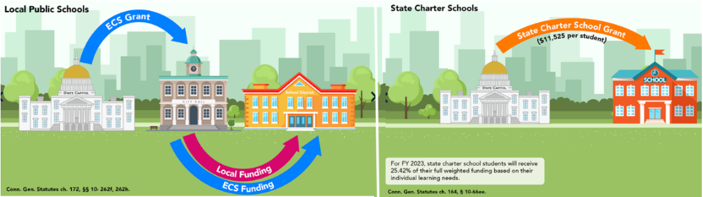

by Emiko Saso
Last updated on 6 December 2022
for Data Visualization for Allwith Prof. Jack DoughertyTrinity College, Hartford CT, USA
There is a misconception that public schools are equally funded, but at least in Connecticut, this is not exactly true. One challenge in education funding disbursement in Connecticut is that there are a number of complicated formulas used to calculate funding for different types of schools. As a result, funding inequities arise between different types of schools. For example, as displayed in Image 1, traditional public schools rely on what is called the Education Cost Sharing formula, however, state charter schools instead receive funding through a state charter school grant (“How Connecticut Funds Education.”). Thus, the School+State Finance Project is currently working to ensure all Connecticut students have equitable education funding.
Image 1: The image above shows the stark contrast between the funding formulas used for public schools versus for state charters. Image taken off of CT School+State Finance Project site.
To explore school funding inequities more in depth, this study looks at two different types of growth in Hartford area school districts over a decade: the growth of student enrollment and the growth of per pupil instructional spending. To avoid funding changes due to the Covid-19 pandemic, I decided to use the decade from school year ending (SYE) in 2011 to SYE 2020 rather than the most recent school years. The Report notes from the SYE 2020 data define instruction as “activities dealing directly with the interaction between teachers and students. Teaching may be provided for students in a school classroom or in another location” (Report Notes). The Report notes also define instruction support services as “activities assisting the instructional staff with the content and process of providing learning experiences for students not reported as Improving Instruction or Library and media service” (Report Notes). To investigate changes in enrollment and instruction support service funding from SYE 2011 to SYE 2020, I used the percentage changes between the school years.ct and how per student instruction and instruction support service spending have changed over this decade, I used the percentage changes between the two school years.
The four districts with the highest enrollment growth from SYE 2011 to SYE 2020 were choice districts and of these four, three were charter districts. Overall though, a majority of districts had a decrease in enrollment while only six school districts had an increase. Furthermore, the top four districts, which were Achievement Hartford Academy District, Capitol Region Education Council, Odyssey Community School District, and Jumoke District Academy, had increases of over 50% and all other districts have percentage change values that are less than 10%. However, looking at the numbers of students instead of the percent change from year to year you may notice that the percent change has a different meaning for different sized schools. For example, the Odyssey Community School District and Capitol Region Education Council both have a similar enrollment increase of about 80 percent during the decade, but Odyssey Community School District increased from only 181 students to 329 students and the Capitol Region Education Council jumped from 4,646 students to 8,657 students.
You can explore the data further by looking at the table in Figure 2. The columns from left to right are as follows: school districts, the SYE 2011 student count, the SYE 2020 student count, and bar charts displaying the percentage changes for each district. The table has also been sorted from highest to lowest percentage change and there is a feature which allows you to search for different districts.
Figure 2: Table of Student Population Percent Change. To view a live version visit this link.
The expenditure data showed that percent change in instructional spending does not have the same increase or decreasing trend as the student enrollment percent change. In fact, three of the districts with the largest increase in enrollment–Achievement Hartford Academy District, Odyssey Community School District, and Jumoke District Academy (all charter districts)– fell among the four districts with the least percent change in instructional spending over the years. However, the Capitol Region Education Council (a magnet district) had the largest percent increase in instructional spending among all the districts. Thus, where the growth happened in instructional spending was almost the opposite of where the growth happened for student enrollment numbers. In fact, the findings showed that Achievement First Hartford Academy was the only district with a percent decrease in instructional spending.
See Figure 3 for more details. Similar to the first table, this second table has the following columns: school districts, SYE 2011 instructional spending amount, SYE 2020 instructional spending amount, and bar charts displaying the percentage changes for each district (the rows also sorted by these values), and also has a search feature.
Figure 3: Table of Instructional Funding Percent Change. To view a live version visit this link.
The findings suggest that without the outliers with the largest enrollment increase included, there is a significantly stronger correlation between enrollment and instructional spending percent changes. I created a scatter plot with the student count percent change on the x-axis, the instructional spending percent change on the y-axis, and each point representing a different school district. The plot has four clear outliers which are far from the rest of the data: Capitol Region Education Council, Achievement Hartford Academy District, Odyssey Community School District, and Jumoke District Academy (See Figure 4).
To examine the exact relationship between the variables, I computed the correlation coefficient between them. A correlation coefficient is a number that describes the strength of the relationship between variables– a correlation coefficient of 1 corresponds to a perfect positive correlation among variables, a correlation coefficient of -1 corresponds to a perfect negative correlation among variables, a coefficient of 0 means there is no relationship between variables (Bhandari). The first calculation gave a correlation coefficient of -0.271, which is classified by Bhandari as a weak negative correlation. Out of curiosity, another calculation was done after removing the four outliers from a copy of the data. This second calculation gave a correlation coefficient of -.523 which is instead classified as a moderate negative correlation. I also created a second graph of the data without the outliers which can be seen below. Although the relationship is still not very strong, it is worthy to note that the second coefficient is nearly double what the first was.
Figure 4: Scatter Plot of Instructional Funding Percent Change and Student Enrollment Percent Change. To view a live version visit this link.
Figure 5: No Outliers Version Scatter Plot of Instructional Funding Percent Change and Student Enrollment Percent Change. The trend line was added to show the correlation between the variables. To view a live version visit this link.
To see changes in student enrollment over a decade, I gathered the data for SYE 2011 and SYE 2020 from the Edsight Enrollment dashboard. I downloaded the data as two Excel files and imported them into Google Drive. To clean the data, I filtered through using VLOOKUP so that only the Hartford Region districts’ data would be displayed. Then, in a new column, I calculated the percent change from SYE 2011 to SYE 2020 (Emiko's Build 4 question 1 data). For instructional funding, I used data from the Per Pupil Expenditures Edsight page. I gathered the data from SYE 2011 and SYE 2020 and compiled it into a spreadsheet (Emiko's Build 4 question 2 data). To account for instructional spending, I summed up multiple values from the given data. A note of caution– due to a change in data formatting on the Edsight website from before 2016-2017 to after 2017-2018, column names were different so the Instructional per pupil expenditure for SYE 2011 is made up of “Instructional Staff and Services,” “Instructional Supplies and Equipment,” and “Instruction and Educational Media Services,” while Instructional per pupil expenditure for SYE 2020 is made up of “Instruction” and “Instruction Support Services Values.” Additionally, while the expenditure data from SYE 2020 had a report with specific definitions for instructional funding and other related columns, the expenditure data from SYE 2011 did not have a clear report with definitions for its differing column names. The two tables and scatter plots were all created with Datawrapper.
“Connecticut's Open Choice Program.” School+State Finance Project, https://schoolstatefinance.org/reports/connecticuts-open-choice-program.
“How Connecticut Funds Education.” School+State Finance Project, https://schoolstatefinance.org/issues/how-ct-funds-education.
“Report Notes: Per Pupil Expenditures by Function: District.” CT.Gov EdSight, https://edsight.ct.gov/relatedreports/ReportNotes_PerPupilExpenditurebyFunctionDistrict.pdf . Accessed 29 Nov. 2022.
Bhandari, Pritha. “Correlation Coefficient: Types, Formulas & Examples.” Scribbr, 11 Nov. 2022, https://www.scribbr.com/statistics/correlation-coefficient/.
To read more on school district funding in Connecticut visit schoolstatefinance.org/